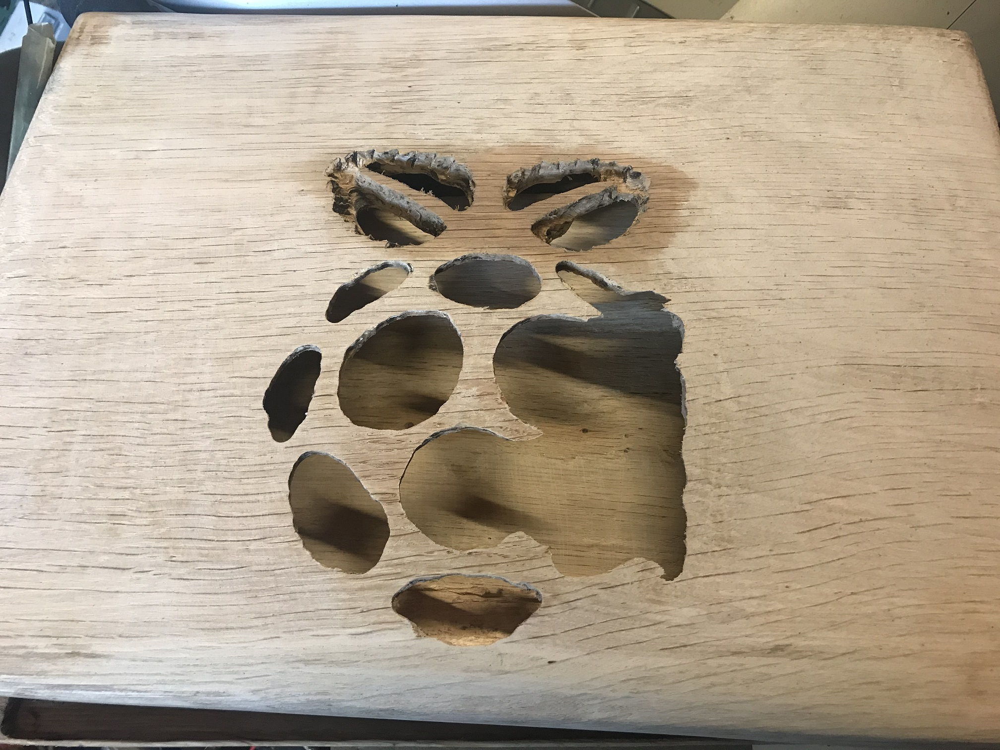
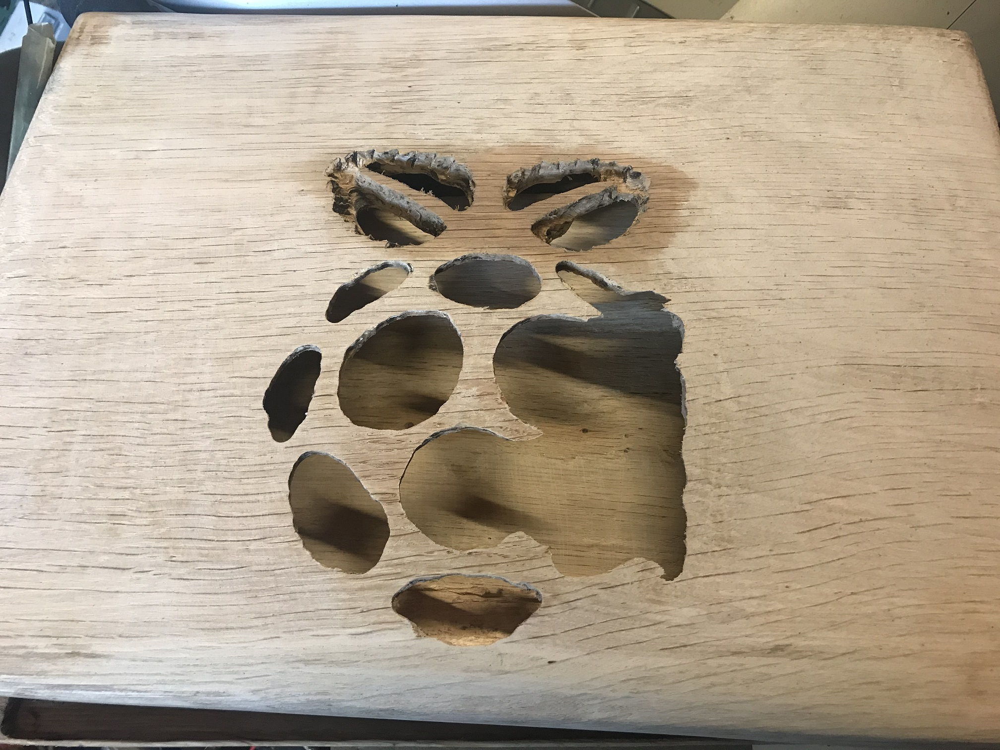

OakPi - Raspberry Pi 4 Laptop

In an early blog post I put together a Raspberry Pi 3B+ and 10" lcd screen in a metal case with 2x 12V 7Amp alarm batteries to
power it whilst I'm out and about.
Although it's functional and fit for purpose I wanted to have something more eye catching.
To be different I thought let's make it out of
wood, slim as possible and try to hide all the wiring. I've always liked oak and calling it OakPi would be pretty cool. I had an old 15.4" LCD screen
from a Toshiba laptop and I sourced a driver board to control the screen. I looked around for a USB slim keyboard and mouse but I
managed to find an ultra slim wireless rechargeable keyboard and mouse so this was perfect.
On a previous project I had bought a pack of 3-40v step down to 1.5-35v 3Amp
regulators so I could have a 12v PSU to power the LCD screen driver and also the regulator set to 5.1v for the Raspberry Pi 4. As the Pi 4 doesn't have
the standard HDMI (type A) but has 2x micro HDMI (type D) ports for enabling 2 screens. I found it difficult to source a HDMI cable type D to type A for
the desired length required, I did find a short type D male to type A female HDMI adapter and so I sourced a 30cm type A to type A HDMI cable which was
just the right length. The LCD screen driver has audio out for speakers so I got a pair of 3W speakers as small as possible but get decent sound out of.
After getting all the parts ready I needed some oak that would be deep enough to have parts fitted inside, I found the perfect depth of oak
of 27mm which was cut to size to be the top and bottom of the laptop. I used a electric planer to make it the right sizing and started to chisel out and
used a Dremel rotary tool for some awkward parts. Using the Dremel tool made it easier but I would say easy in any way as getting the oak thickness from
27mm down to almost 2mm for the Raspberry Pi 4 to sit low enough. As you can see from the pictures below I did mess up the top as I was trying get
enough depth for the LCD driver board, people may of heard me for miles around when I did this. I managed to get some more oak to make the top again and
have a spare piece just in case ha ha. I am very tempted to remake the bottom and not have the mouse so called docking position.
I'm able to power
it by a mains 12v PSU or I can use a old SLR camera bag I fitted 2x 12v 7Amp alarm batteries so just like my metal case Pi I can be mobile with my OakPi laptop.
Mouse over the pictures below for more information
 
